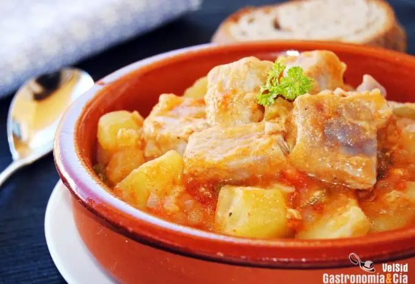
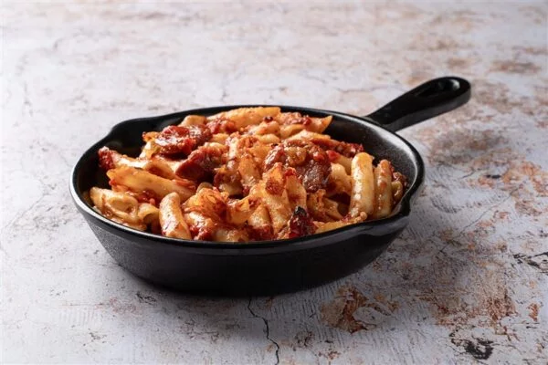

Recetas de la semana

Crema catalana
Flameada y tradicional

Marmitako
Tierno y jugoso

Macarrones
Con chorizo y atun
Lavar los chipirones bajo agua fría y escurrirlos bien.
Picar finamente la cebolla y los dientes de ajo.
En una sartén grande, calentar el aceite de oliva a fuego medio. Agregar la cebolla y el ajo picados y cocinar hasta que estén dorados.
Agregar los chipirones a la sartén y cocinar durante 5 minutos, removiendo ocasionalmente.
Verter el vino tinto y el caldo de pescado sobre los chipirones. Sazonar con sal y pimienta al gusto. Cocinar a fuego lento durante 20-25 minutos.
Una vez que los chipirones estén tiernos y la salsa haya reducido, servir caliente, espolvoreado con perejil fresco picado.
Flameada y tradicional
Tierno y jugoso
Con chorizo y atun